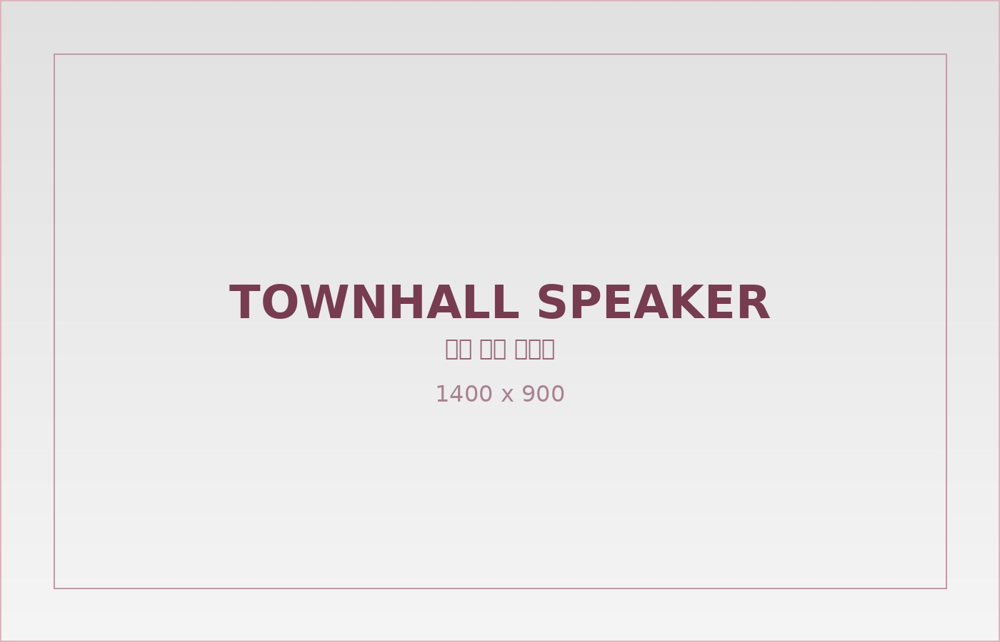

Reframe the Rule. Own the Future.
기준을 새로 쓰고 미래를 이끄는 사람들
뷰티셀렉션은 집요한 선택과 과감한 실행으로 6년간 40배 이상의 성장을 이뤄낸 여정을 걸어왔습니다.
이제 우리는 단순한 1위를 넘어, 기준을 정의하고자 합니다.
Deep Divers, Rule Builders, Obsessive Performers. 본질을 꿰뚫고, 새로운 기준을 만들며, 결과로 증명하는 사람들과 함께 미래를 만들어갑니다.

PROCESS
채용 프로세스
지원부터 합류까지, 뷰티셀렉션은 간결하고 명확한 프로세스를 운영합니다. 각 단계는 지원자의 경험을 존중하며, 성장을 함께 상상할 수 있는지에 집중합니다.
서류 접수
›
1차 인터뷰
›
2차 인터뷰
›
최종 합격
숫자보다 서사를, 형식보다 진심을 봅니다. 이력서와 자기소개서를 바탕으로, 지원자가 걸어온 여정과 팀과의 연결 가능성을 함께 살펴봅니다. 지원 후 7일 이내 결과를 안내드립니다.
함께 일하는 장면을 상상하며 묻습니다. 직무 경험과 역량은 물론, 실제 팀 안에서의 협업과 몰입 가능성을 이야기 나누는 시간입니다.
지원자의 방향과 회사의 방향이 맞닿을 수 있을지를 함께 상상합니다. 조직 문화와 일의 철학, 커리어의 방향성에 대해 깊이 나누는 단계입니다.
합격 이후도, 우리에게는 중요한 시작입니다. 조건과 입사 일정을 조율한 뒤, 온보딩 전 과정을 따뜻하고 꼼꼼하게 준비해드립니다.
※ 포지션에 따라 과제, 코딩 테스트 등 추가 전형이 진행될 수 있습니다.
모든 전형은 빠르게, 그러나 신중하게 진행됩니다. 지원자 한 분 한 분의 시간을 소중히 생각합니다.
FAQ
자주 묻는 질문
서류 전형 → 1차 인터뷰 → 2차 인터뷰 → 최종 합격의 순서로 진행됩니다. 포지션에 따라 과제, 코딩 테스트 등의 전형이 추가될 수 있으며, 사전에 안내드립니다.
채용사이트를 통해 접수하거나, recruit@beautyselection.co.kr로 이메일 지원도 가능합니다. 일부 포지션은 포트폴리오 제출이 필수입니다.
지원서는 실무자가 직접 정성스럽게 검토합니다. 합격 여부와 관계없이 모든 지원자분께 결과를 메일 또는 메시지로 안내드립니다.
전형 결과는 단계별로 7일 이내 안내드리는 것을 원칙으로 하며, 전체 채용 과정은 보통 약 한 달 내외 소요됩니다.
네, 가능합니다. 전 포지션 인터뷰는 대면을 기본으로 하지만, 일정에 따라 18시 이후 또는 화상 면접도 조율 가능합니다.
네, 가능합니다. 동일 포지션이라면 최종 결과를 받은 시점으로부터 6개월 후, 다른 포지션은 언제든 재지원하실 수 있습니다.
채용 문의
궁금한 점이 있으신가요? 뷰티셀렉션은 항상 열려 있습니다. 지원 전 문의, 포지션 관련 질문, 혹은 아직 공고에 없는 역할에 대한 관심, 무엇이든 언제든 환영합니다.
채용팀 Email : recruit@beautyselection.co.kr